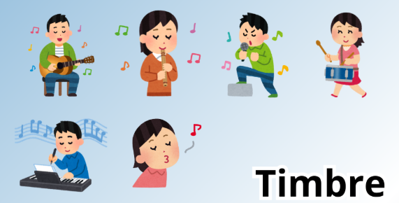
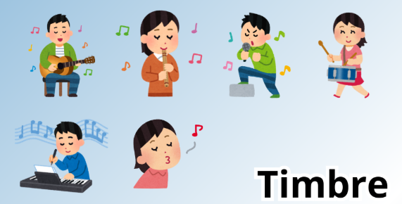

Es el sonido de cada instrumento o voz donde cada uno tiene una sonoridad específica, no suena igual un piano que una guitarra, lo cual permite distinguir entre instrumentos que tocan la misma nota, como un violín y una flauta.

Es el sonido de cada instrumento o voz donde cada uno tiene una sonoridad específica, no suena igual un piano que una guitarra, lo cual permite distinguir entre instrumentos que tocan la misma nota, como un violín y una flauta.
Estimado estudiante para realizar el ejercicio propuesto pide ayuda ha algunos de tus familiares para que te orienten en la misma.
Obra publicada con Licencia Creative Commons Reconocimiento Compartir igual 4.0